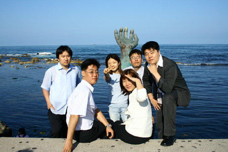
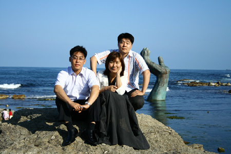
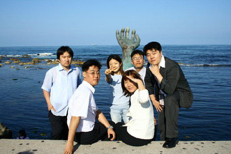
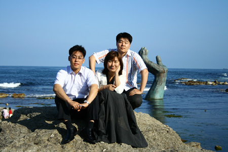

포항에서 있었던 결혼식에 갔다가(렌트해서.. 운전수.. 고생했으~) 호미곶에 갔다.
우리나라에서 해가 제일 먼저 뜨는 토끼 꼬리 부분이다.
(호랑이 꼬리라고, 나보고 일제 식민사관에 빠져있다고... 누가 혼냈다.. 하지만 어쩌랴, 아무리 우리나라 전도를 살펴봐도 내 눈엔 토끼로 보인다.)



우리나라에서 해가 제일 먼저 뜨는 토끼 꼬리 부분이다.
(호랑이 꼬리라고, 나보고 일제 식민사관에 빠져있다고... 누가 혼냈다.. 하지만 어쩌랴, 아무리 우리나라 전도를 살펴봐도 내 눈엔 토끼로 보인다.)

